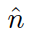

To begin, I'd like to say that the original goal was not reached, but we made significant progress. The video to the right shows the current capabilities of our simulator and renderer. The original goal was to render and simulate multiple fluids of different densities to demonstrate Taylor-Rayleigh effects. Unfortunately, creating the renderer took longer than expected. As such, the simulator is currently only able to simulate and render a single fluid. However, we were able to get the particle simulation working as well as the renderer.
As I hinted at in the last paragraph, the fluid simulator is composed of two parts: the particle simulator and the renderer. The particle simulator updates the vertex positions of all the particles in each iteration. This updating process occurs in the GPU using OpenCL and applies gravity and enforces density constraints on the particles to simulate the movement of a fluid. The renderer takes the positions of the particles and generates the visual appearance of the fluid using OpenGL. I will first discuss how the particle simulator works and then I will go over the renderer.
Rendering with 32k particles.
The particle simulator goes through four phases in the following order: applying gravity and predicting positions/velocity; finding neighbors; enforcing fluid density constraints; finding and fixing particle collisions.
This first part is fairly simple. The velocity and position of each particle are updated according to the two equations below.
Visualization of grid assignments. Particles with the same color are assigned to the same grid.
After predicting the particles' updated positions, the next step in the simulation is to find neighbors for each particle. This is done according to the paper Cuda Particles (Green 2008) by creating uniform grids across the scene. Each grid is assigned an ID and each particle is assigned to a grid based on its location in space. The grids used were cubes with a side length equal to twice a particle's diameter.
Once each particle is assigned a grid, the array of assigned ID's is radix sorted to make the operation of finding neighbors faster. Once these ID's are sorted, the starting index in the ID array for each contiguous block of similar grid ID's is recorded. These indices mark where to find, in the array, the particles that belong to a particular grid. The ID's have a one to one relationship with each grid, making it simple to find a particle's neighbors.
The neighbors are used to perform localized computations in the next sections. However, since particle's can be found on the boundary, a 3x3 block of grids with the particle's assigned grid at the center must be searched for neighboring particles.
In order to give the particles a fluid-like motion, the simulator enforces a group of density constraints (Macklin and Müller 2013) shown below. N is the number of particles in the simulation and j indexes a particle's neighbors.
The constraint states that the density of a group of particles centered about particle i must have a density ρi equal to that of the rest density ρ0. The dynamic density ρi is calculated in the following way.
W is a smoothing kernel which helps to fill in the gaps between the particles. In this case, the poly6 kernel is used (Macklin and Müller 2013). h is the maximum distance between a particle and its neighbor and was set to twice the diameter of a particle in this case.
In order to enforce the density constraint, Jacobi iterations are used to solve for Δpi, a correction factor for the position of particle i.
The correction factor is obtained by calculating the following λ term and then using it in the subsequent equation.
The ε term in the denominator for the calculation of λi is a relaxation constant that is used to remove instabilities when the gradients approach 0. In this case, W is the Spiky kernel, which is used because its gradient does not go to 0 when r goes to 0, unlike the Poly6 kernel.
This process of finding the λ terms and updating the positions is repeated for a number of iterations, 5 in this case, to get as close to an optimal solution as possible.
In each iteration of calculating the position corrections, collisions between particles are also found and fixed. For each particle, a search through the neighbors is found for any intersecting particles. Colliding particles are simply moved along a line connecting their centers until they are no longer colliding.
Once the above steps are done, one frame of the simulation is then rendered using the process which will be explained below. Unfortunately, viscosity and vorticity were not enforced in the simulator as the code which calculated those corrections were too slow on the Macbook and would crash the program.
The rendering pipeline can also be broken down into four steps. First, the particles are rendered as point sprites, which are used to calculate a depth map. This depth map is then smoothed to create a more liquid-like appearance. A thickness map is calculated of the amount of liquid present at each point in the screen. These values are then finally combined to produce the color of the final liquid.
First, each of the particles positions are passed to a vertex shader. This vertex shader converts the particle's positions from world space to screen space. In doing so, it also generates rectangles around each point using the OpenGL built in point-sprite rendering option, passing these fragments to the fragment shader.
The fragment shader takes the rectangles and shapes them into spheres, discarding points outside the sphere and calculating the points' z coordinates in screen space depending on their distances from the original particle position.
These z positions, or the depths of the points are output from the fragment shader. Depth test is enabled, so only the values closest to the screen are retained. Essentially, this creates a depth map of the surface of the fluid that is visible to the camera
Visualization of what the point sprites would look like if rendered as spheres.
Visualization of the depth map with 32k particles. Brighter colors are further from the screen.
Visualization of the smoothed depth map. Brighter colors are farther away.
The next step is to remove the bumpiness of the spheres in the depth map. This is done with a process called curvature smoothing. To do this, the algorithm uses several "smoothing time-steps" (van der Laan, et al. 2009). In each smoothing step, the algorithm updates the depth, z, according to:
H is the mean curvature flow and is calculated with:
 is the unit normal of the surface at a certain point. The depth value is then smoothed by using an Euler integration of the change in z with respect to the time step.
The next step is to get the thickness of the liquids at all the points on the screen. This is done by rendering the particles as point sprites again. However, the fragment shader calculates and outputs the chord length of the sphere based on the distance from the center of the point sprite. These thicknesses are then summed up using the OpenGL blend function.
Visualization of the thickness of the fluid. Brighter colors are thicker regions.
The final liquid is rendered using the final equation at each point on the screen.
T(x, y) is the thickness of the fluid at a certain point on the screen. S(x, y) is the scene color at a certain point on the screen. F is the fresnel equation. n is the surface normal. v is the camera vector from the point on the screen to the camera position. h is the half angle between the normal vector and the camera vector.
Van der Laan, Wladimir J., Simon Green, and Miguel Sainz. "Screen space fluid rendering with curvature flow." Proceedings of the 2009 symposium on Interactive 3D graphics and games. ACM, 2009.
Green, Simon. "Cuda particles." NVIDIA whitepaper 2.3.2 (2008): 1.
Macklin, Miles, and Matthias Müller. "Position based fluids." ACM Transactions on Graphics (TOG) 32.4 (2013): 104.
I, Jiayi (Gary) Chen, built the entire renderer as well as the particle simulator. I also created the entire website for the project (the proposal, milestone, and final report) and wrote all of the content. In addition, I edited the videos for both the milestone and final and narrated the entire final video. I also created all of the demos and rendered them all on my laptop. Finally, I created the slides for the milestone and half of the slides for the final presentation. Writing the code and rendering the demos took about 2 weeks of work. The final writeup took a day to write.
Kevin wrote viscosity and vorticity confinement code, which could not be implemented into the code (for reasons mentioned above). This took 3 days. He also wrote half of the proposal content, which was an afternoon of work. Kevin also created half of the slides for the final presentation, which took half an hour.
I would like to register a complaint about Kevin's lack of contribution to the project. We had originally agreed to split the work in half. I would write the renderer and he would write the particle simulator. We also agreed that I would write it in OpenGL and he would use OpenCL. However, he had not written any usable code for the particle simulator by the milestone. As such, I ended up having to take over his part of the work and write the particle simulator. Furthermore, he contacted me only two hours before the deadline for the final report to work on it and didn't realize that we needed to create a final report. I had to spend the entire week finishing up this project and have not been able to start studying for my final exams yet.